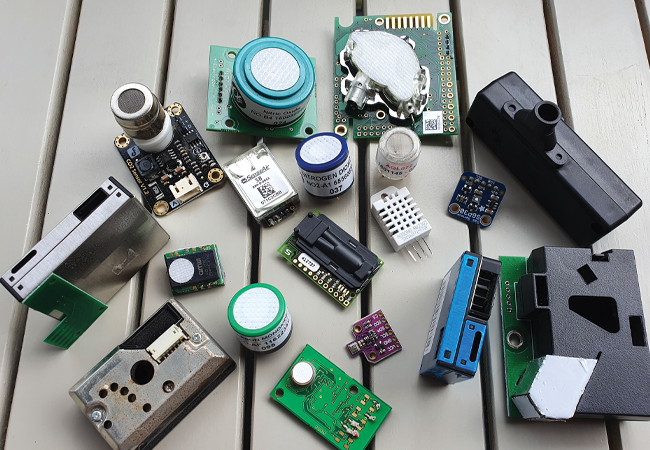

Nuestras Soluciones

Sensores Inteligentes
Nuestros sensores de última generación detectan cualquier anomalía en tiempo real, garantizando una respuesta rápida ante posibles amenazas, ya sean intrusiones, incendios o fugas.

Cámaras de Vigilancia
Cámaras de alta definición con visión nocturna y transmisión en tiempo real, permitiendo una vigilancia clara y precisa de tus propiedades desde cualquier lugar.

Alarmas Avanzadas
Sistemas de alarmas inteligentes que activan notificaciones instantáneas a tu dispositivo móvil, asegurando que siempre estés al tanto de cualquier incidente.
Acceso Remoto
Controla y monitorea tu sistema de seguridad desde cualquier lugar con nuestra aplicación móvil, dándote acceso completo y en tiempo real a todas tus soluciones de seguridad.